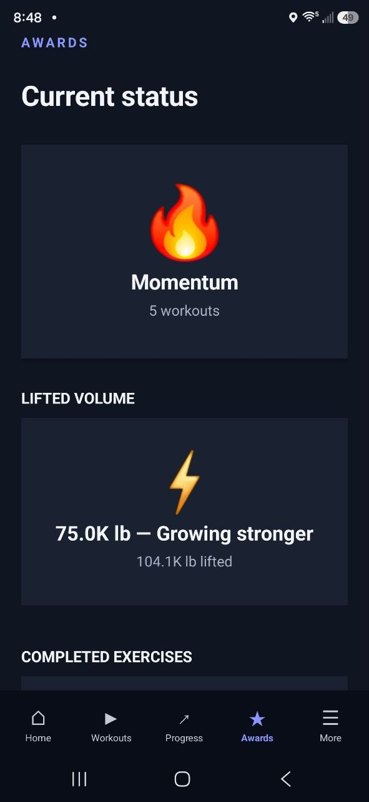
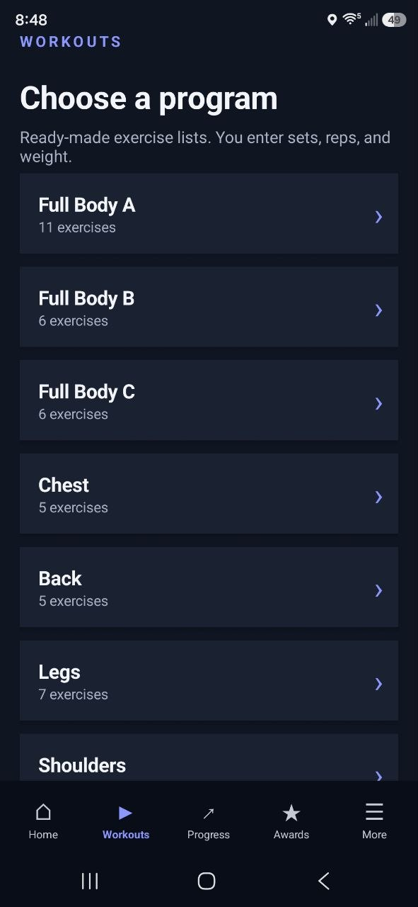

BetterSet: Gym Workout Tracker
Log sets, reps and working weight with an Android workout journal. Choose a built-in program, record each set in kilograms or pounds, and review your training history, body-weight charts and progress photos.
See every workout at a glance


Built for the gym
Log every set
Use Full Body A/B/C or muscle-group programs. Record weight and reps separately for every set, plus treadmill minutes. An active-workout draft lets you return to an unfinished session.
Review your progress
Browse workout history, month and year calendars, statistics and streaks. Track body weight with a chart, compare progress photos and share workout-result cards.
Make it your routine
Set reminders for selected days and times, choose English or Russian, and use light, dark or system themes. Earn awards for training days, exercises, lifted volume and cardio.
Your training journal, on your phone
No account is required. Your local profile, workout log, body-weight entries and progress photos are stored on your phone. Use the app's data controls to save workout history, and keep the original photos you need before changing devices or uninstalling.
BetterSet includes banner advertising provided by Google Mobile Ads. Advertising uses network services. Reminder delivery depends on Android notification permissions, battery management and device settings; exact timing is not guaranteed.